Calorie Calculator
product category
A brand built around the portion and its proportions, not around restriction. Calm, food-positive, exact where it matters.
The device: a partial circular arc. A plate seen from above, a portion of a whole, an honest estimate that does not pretend to close the circle.
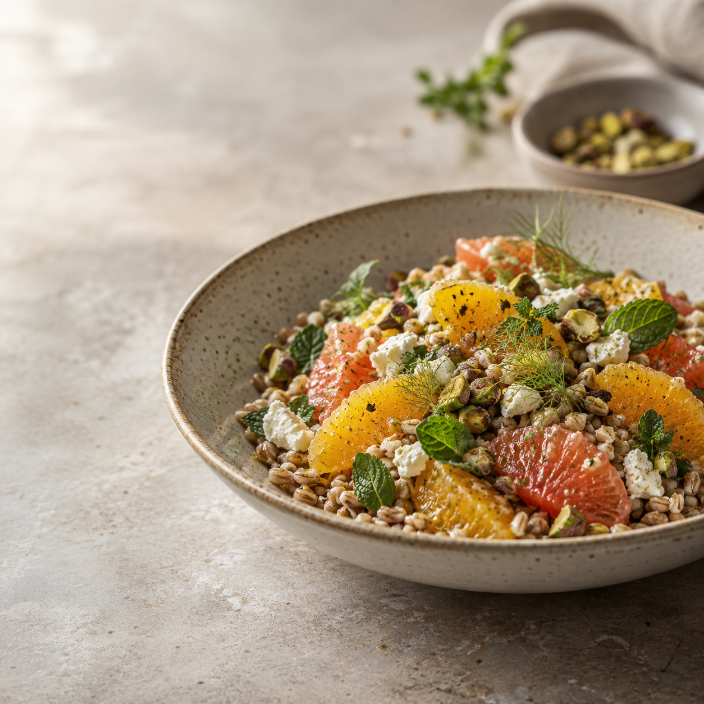
01 Brand idea
Warm cream ground, daylight photography, one berry accent. Data is present and exact, but it sits on a kitchen table rather than an instrument panel.
Protein, carbs and fat are shown as parts of a portion at equal weight. Nothing turns red at someone for eating. No good food, no bad food.
Figures are database estimates against a portion you set. The open arc says so: precise enough to be useful, never claiming to be a measurement.
02 Naming · six candidates, three shortlisted, no winner yet
Short, pronounceable, friendly, and pointing at the portion rather than the diet. “Calorie Calculator” stays as the product category line under any of them. Trademark screening has not been done at this stage.
Plated
ShortlistedWhat is on the plate, already served. Food-positive, complete, calm. Prior use in the meal-kit category needs checking.
Piatto
ShortlistedItalian for plate. Warm and easy to say, and the final “o” is a natural home for the arc.
Helping
ShortlistedA helping is a portion, and the word is supportive by itself. The most human of the six.
Ladle
ConsideredServing, generosity, kitchen. Strong shape, but reads as a utensil brand before it reads as a product.
Ratio
ConsideredProportion itself. Clean wordmark, but it tips towards maths and clinical, and the name is crowded elsewhere.
Dollop
ConsideredTwo “o”s for the arc and a portion in the name, but it lands closer to playful than to precise.
03 Wordmark · Piatto, Plus Jakarta Sans 600, tracked to −4.5% · the final “o” is the arc
Lowercase, every letter the typeface’s own, and the final “o” redrawn as the partial arc: same width, same stem, round terminals, a 35° opening at one o’clock. The primary lockup carries no separate mark. In text and for assistive technology the name is always written “Piatto”.
piatt
Calorie calculator
Reversed on berry: wordmark and descriptor in canvas white. One colour, no outline.
The brand mark on its own, in ink or berry. It carries the brand where the word cannot fit: the app icon, a favicon, a list marker, the corner of a photograph. It is never placed before the wordmark.
piatt
Calorie calculator
A · PrimaryThe final “o” is the arc. Selected after three refinements (60°, 40°, 28°): a 35° opening keeps the letter and keeps the plate. No separate mark before the word.
piatto
Calorie calculator
B · Stacked, secondaryThe mark above the plain word, for a splash screen or a square tile where the mark has to lead. The word is set plain so the arc appears once.
piatto
Calorie calculator
C · Signature, secondaryThe plain word closed by the small mark, for a footer or the end of a line where the arc-“o” would be too small to read.
piatt
Calorie calculator
240 · hero, printpiatt
Calorie calculator
120 · mastheadpiatt
Calorie calculator
64 · splashpiatt
40 · nav barpiatt
24 · footer04 App icon · cream, berry, one arc, no gradients
The same geometry at three intensities. No numbers, no food, no illustration: the arc has to be recognisable at 29 px on a home screen, next to louder neighbours.
Canvas ground, berry arc centred at 62%. The most literal plate, and the calmest of the three.
The arc enters from the bottom-right, the way the product’s photography enters a screen. More distinctive, slightly less legible when tiny.
Berry ground, cream arc. Strongest on a crowded home screen; the least like the app’s own light surfaces.
05 The partial arc · one construction, every size
One circle, one opening, round ends. The opening sits at one o’clock, where a portion is taken. It is never a gauge: there is no track behind it and it never fills towards a target.
The product’s bleed crop already draws the arc: a circular photograph entering from an edge shows only part of its rim. The device and the signature are the same shape.
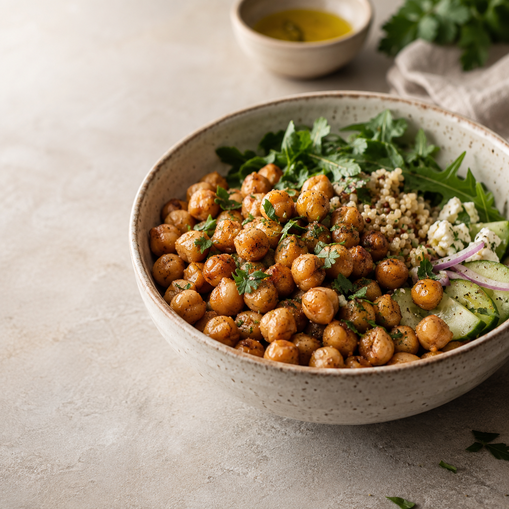
Bottom-left works as well as right. The type always holds the open side.
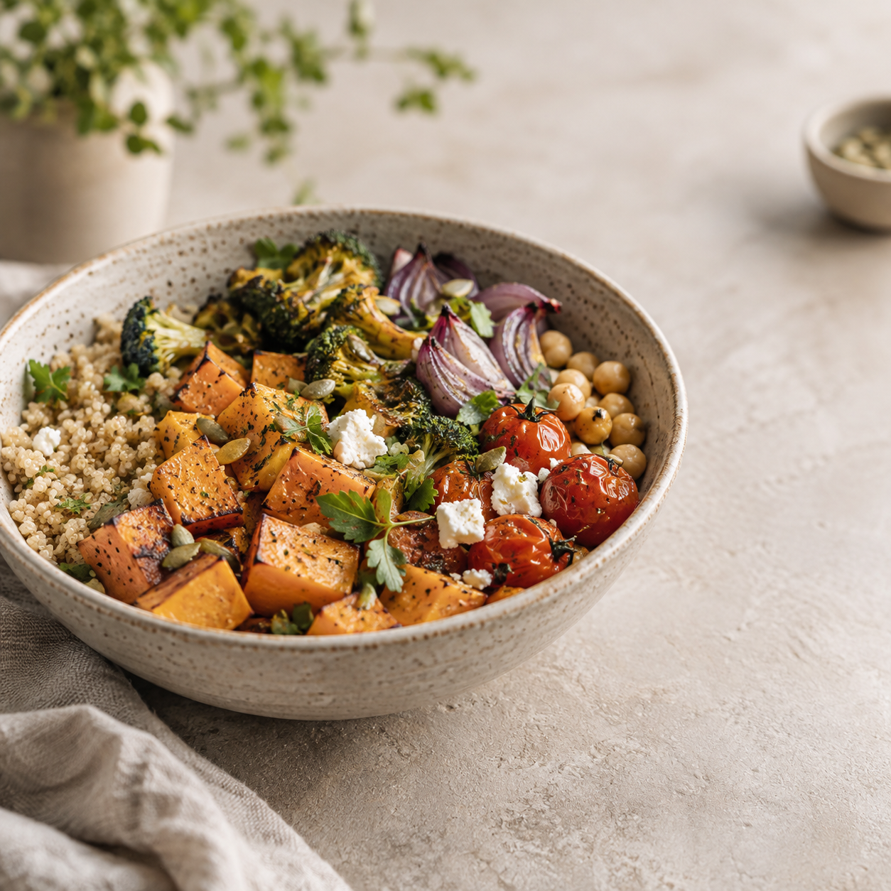
Three arcs, one portion: what the calories in this portion come from. Labelled always, never a target. Segmented means data only. It is never the logo and never the app icon; the single arc is the brand.
Single arc = brand. Portion, proportion, the mark, the icon. Segmented arc = data. Protein, carbs and fat, and nothing else.
Not a gauge. No grey track, no percentage in the middle, no daily target it fills towards.
Not a logo on everything. One arc per surface at most, and usually none: the photography carries the shape.
Not decoration. Where it appears, it means a plate, a portion or a proportion.
06 Colour · the existing palette, by role
Every value below is already in the product. What the brand layer adds is discipline: berry is the brand and the action, and nothing else borrows it.
Today protein borrows berry, so the brand colour also means “protein”. This proposal separates brand from data: three food-adjacent hues that never carry an action, never mark a selection and never appear as a fill in the app. Marker plus word, always.
The saffron and clay above are brand and marker hues. Where a macro colour ever has to carry a control edge or a figure on canvas or surface, these darker siblings clear 3 : 1 on both grounds. Still a proposal; no token changes.
Deep teal already clears text contrast
from saffron #D9A441 · 2.2 : 1
from clay #E08A5B · 2.5 : 1
Ratios: on canvas #FBFAF8 over on surface #FFFFFF. WCAG 1.4.11 asks 3 : 1 of a control boundary or graphic; 1.4.3 asks 4.5 : 1 of text. Both darker values pass the first; teal passes both.
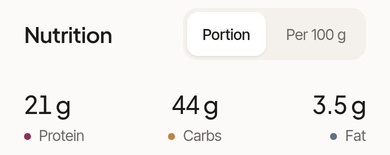
The shipped macro row. Berry dot for protein, amber for carbs, slate for fat. Correct, and the dots are never the only carrier of meaning.
Nothing about the hierarchy, the alignment or the weights changes. Only the three 7–9 px markers and their hues. Berry is freed to mean brand and action alone.
Where the arcs meet the food photography, teal, saffron and clay come from the same table: lentils, squash, citrus. Brand graphics only; not an app component.
07 Typography · the existing pairing, given room
Weights 400, 500 and 600 only. Hierarchy comes from scale and space, never from bolding. Every figure is tabular so columns hold still while a portion changes.
piatt
08 Photography direction · the approved set, six dishes and the ingredients behind them
Near-overhead, the dish filling the frame, a warm stone ground with almost nothing else on it. Appetising without being styled to sell. The variety is in the food, not in the props.
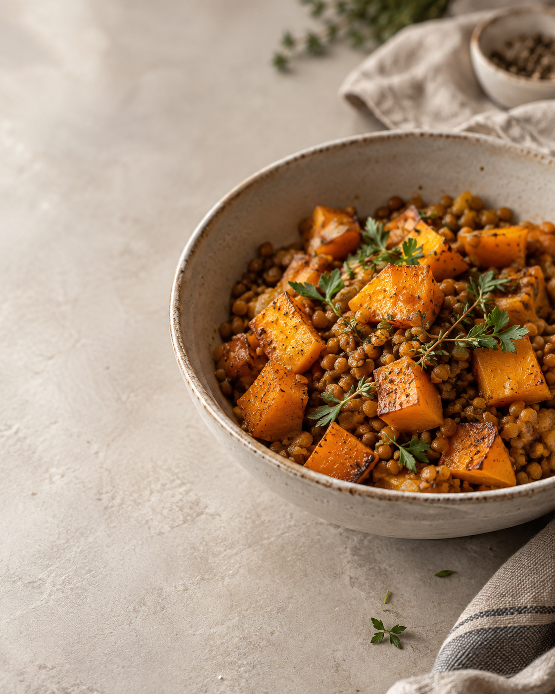
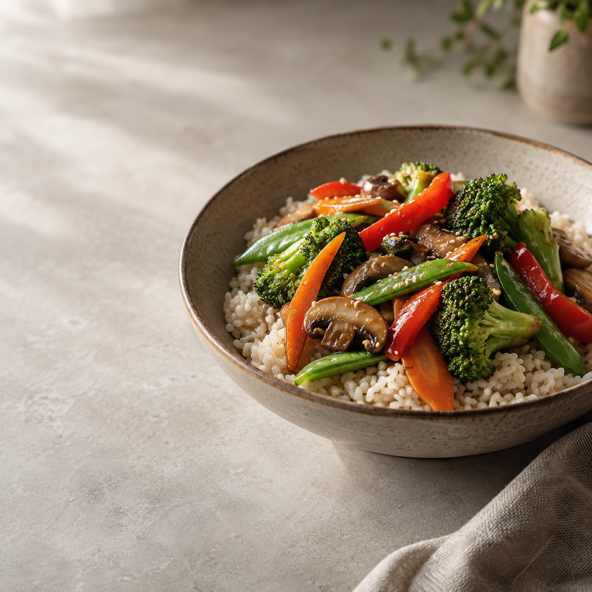
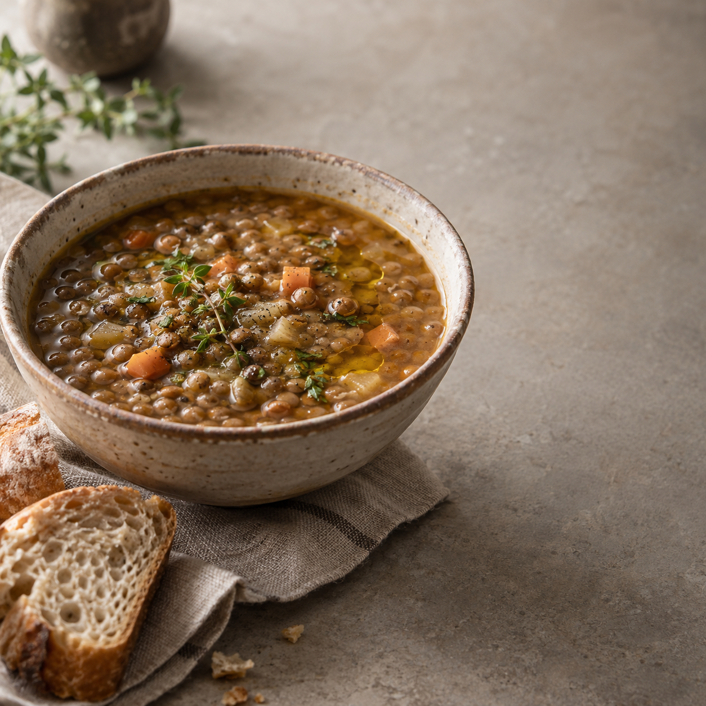
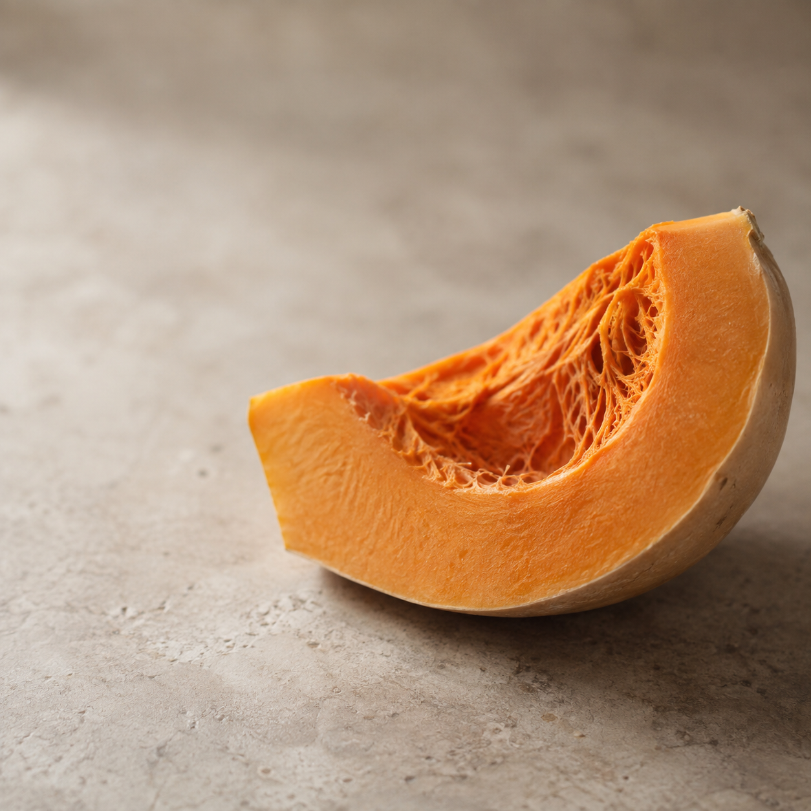
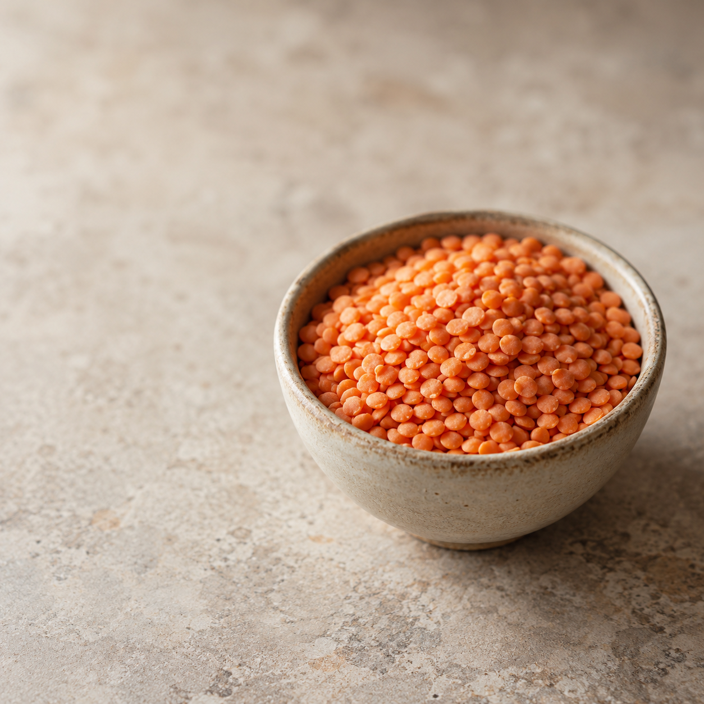
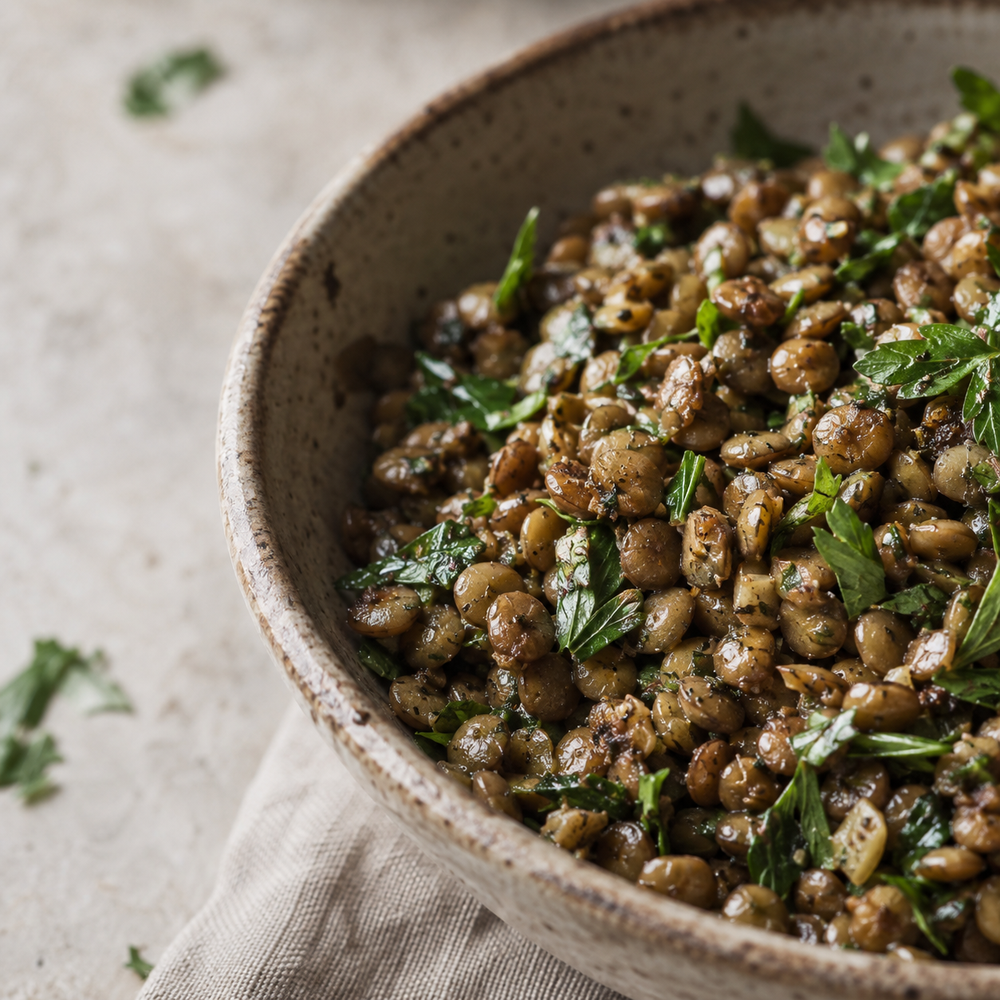
Soft daylight, gentle shadow, no fill from the front. Nothing is glossed.
The table is the canvas colour’s cousin. Photography and interface share one temperature.
Bowls for recipes; a wedge of squash, a bowl of lentils or a bunch of parsley for products and rows.
Circle, square, 3:2 and 4:5. The circle enters from an edge and becomes the arc.
The signature, at brand scale. A crop entering from the left, the answer holding the open right, the arc keeping them company. Data never sits on food.
09 Icon language · 24 px box, 1.6 stroke, round caps, currentColor 10 Real product fragments
The product’s icons are already the brand’s: one stroke, round ends, no fills. The arc joins the family as the glyph for a portion. Everything else is untouched.
Shown at 64 px for the board. In the product every glyph is 24 px inside a 44 px target. The portion glyph is the only addition, and it is proposed, not built.
Captured from the built Storybook at 390 px. Nothing here has been redesigned: the brand layer has to belong to these surfaces, or it does not belong anywhere.
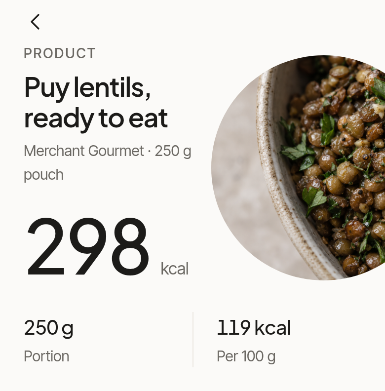
Nutrition Result · hero hierarchyThe answer, the pair beneath it, and the bleed crop already drawing the arc.
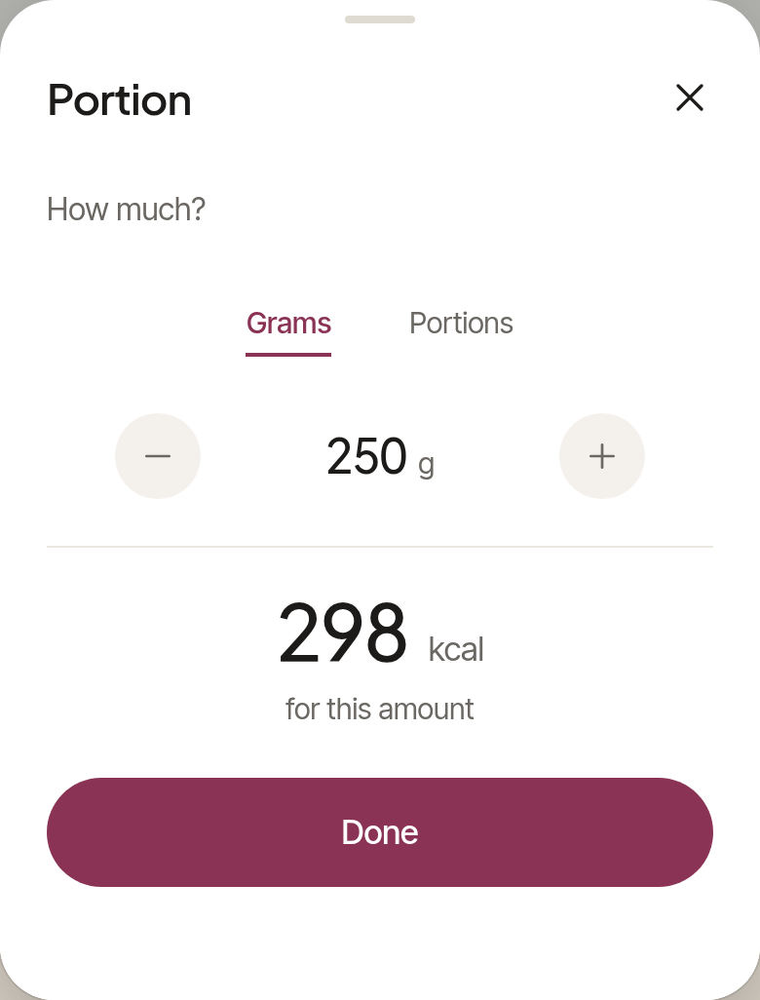
Portion sheet · portion controlOne question, one consequence. The figure recalculates in place.
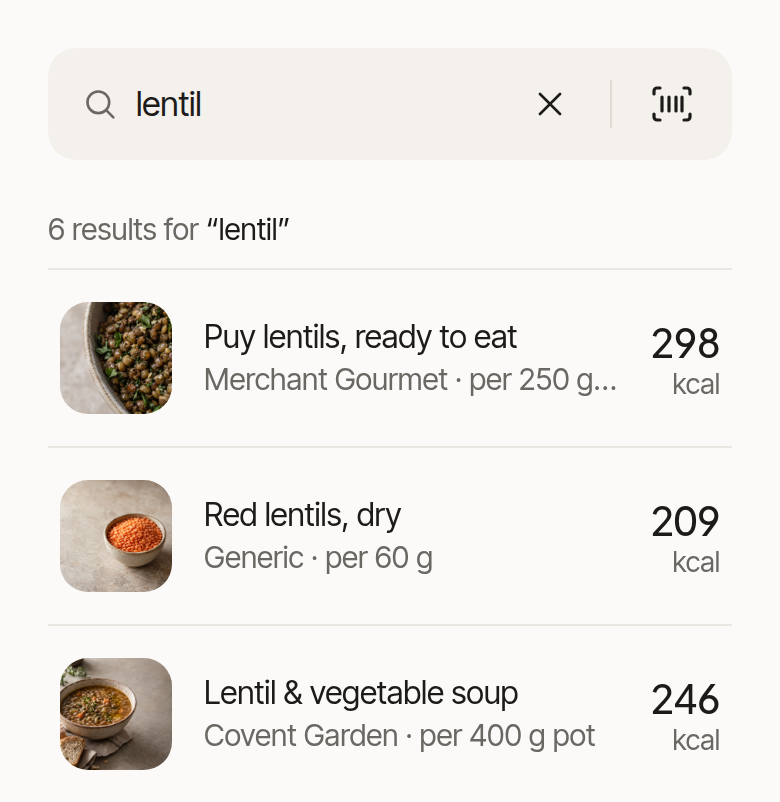
Food Search · result rowsThumbnail, name, source, figure. The icons above are the ones in the field.
11 Tone of voice · clear, calm, neutral, supportive
298 kcal in this pouch. If your portion is different, change it.The figure first, then the one thing that most affects it. An instruction, not a warning.
Protein, carbs and fat for this amount.Proportion of the portion. No target, no percentage of a day.
Not available. The database has no figure for this.Missing data is said in words and explained. It is never a zero and never the user’s fault.